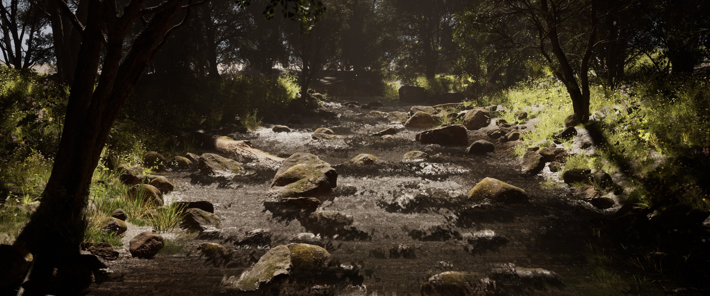
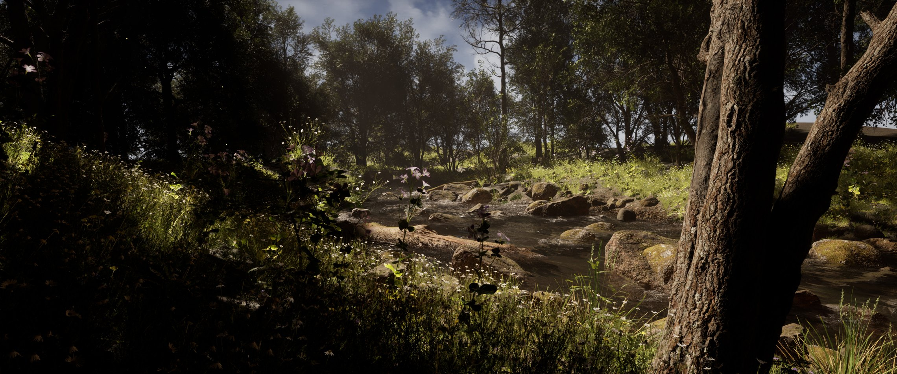
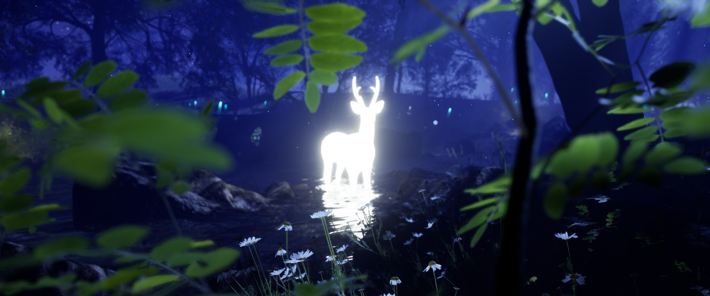
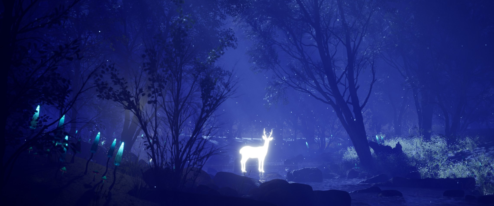
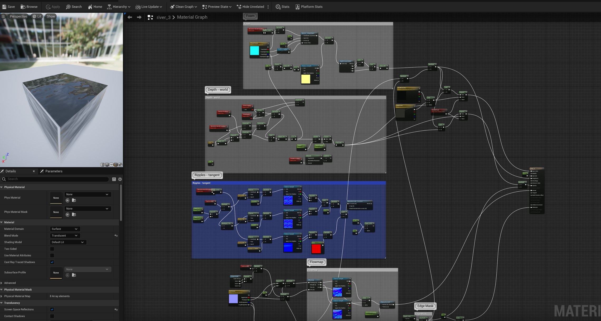
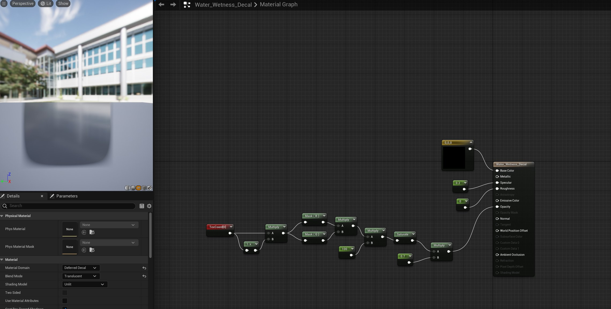
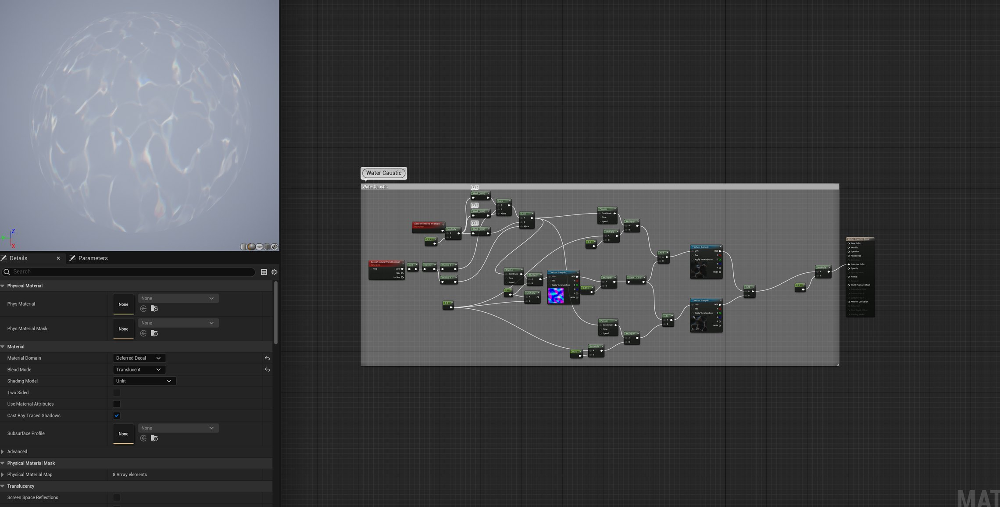

An enchanted forest environment with a realistic stream.
This project was to create an enchanted forest environment.
Landscape, lighting, camera, and blueprint work to build materials used for water expression were handled to finish the project.
Mainly focused on building the water material in Blueprint and lighting of both day and night versions.
This environment is meant to be interactive and to provide a mystic experience to players with a sense of immersion.
Goal
1. To create aesthetically refined day and night forest scenes
2. To create an adjustable water shader
- Received professional feedback from Gerardo Contreras (Surface and LRC Artist)
- Assets from Unreal Engine Marketplace




Shader Building (Blueprint)
Water Shader



Features of the Adjustable Water Shader
1. Deep / Shallow Color
2. Depth
3. Water Normal (Shape of Ripples)
4. Foam On/Off
Land Shader
Customized Blueprint landscape material graph.